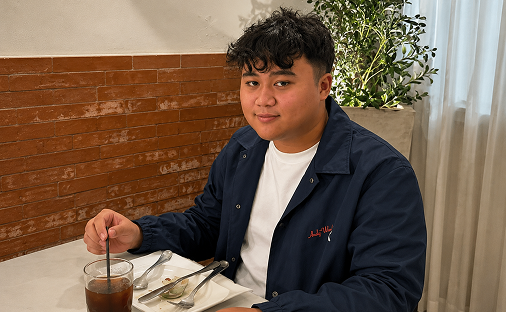
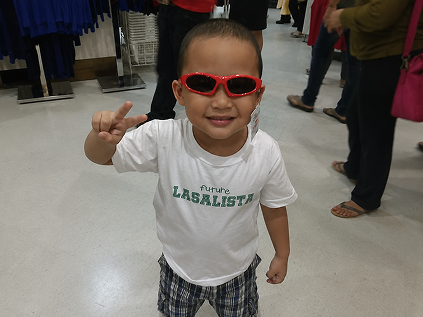

Hello, I'm
I'm an Information Technology student who enjoys building, fixing, and exploring how technology works behind the scenes. When I'm not studying or working on projects, I'm constantly learning new tech skills and improving my craft as a developer.

